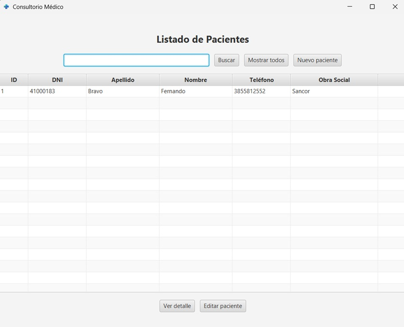
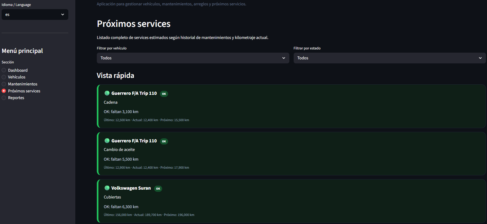

Proyecto principal
Sistema de Consultorio Médico
Aplicación de escritorio para gestionar pacientes, consultas, historia clínica, estudios, vacunación y exportación de documentos.
Desarrollo aplicaciones útiles para ordenar procesos, gestionar información y transformar datos en herramientas prácticas. Me enfoco en sistemas de escritorio, bases de datos, automatización y soluciones pensadas para usuarios reales.
Portfolio
Sistemas construidos para resolver necesidades reales: gestión, registros, datos, reportes y procesos administrativos.

Aplicación de escritorio para gestionar pacientes, consultas, historia clínica, estudios, vacunación y exportación de documentos.

Sistema para registrar autos y motos, controlar mantenimientos, visualizar costos y diferenciar reparaciones según el tipo de vehículo.

Aplicación simple para pequeños negocios, orientada al registro de ingresos, egresos, métodos de pago y resumen del dinero del turno.
Perfil
Me interesa unir desarrollo de software, análisis de procesos y tratamiento de datos para construir herramientas útiles.
Me gusta analizar cómo se organiza la información dentro de un negocio, consultorio o proceso cotidiano, para luego convertir esa necesidad en una aplicación simple, clara y funcional. Mi objetivo es crecer hacia un perfil técnico orientado a sistemas de gestión, automatización y datos.
Conectar
Mis canales principales para mostrar proyectos, conectar y recibir oportunidades.
Desarrollador de software · Sistemas de gestión, datos y automatización
Construyo aplicaciones de escritorio y herramientas que ordenan procesos reales. Si buscás perfil junior con enfoque práctico, conversemos.